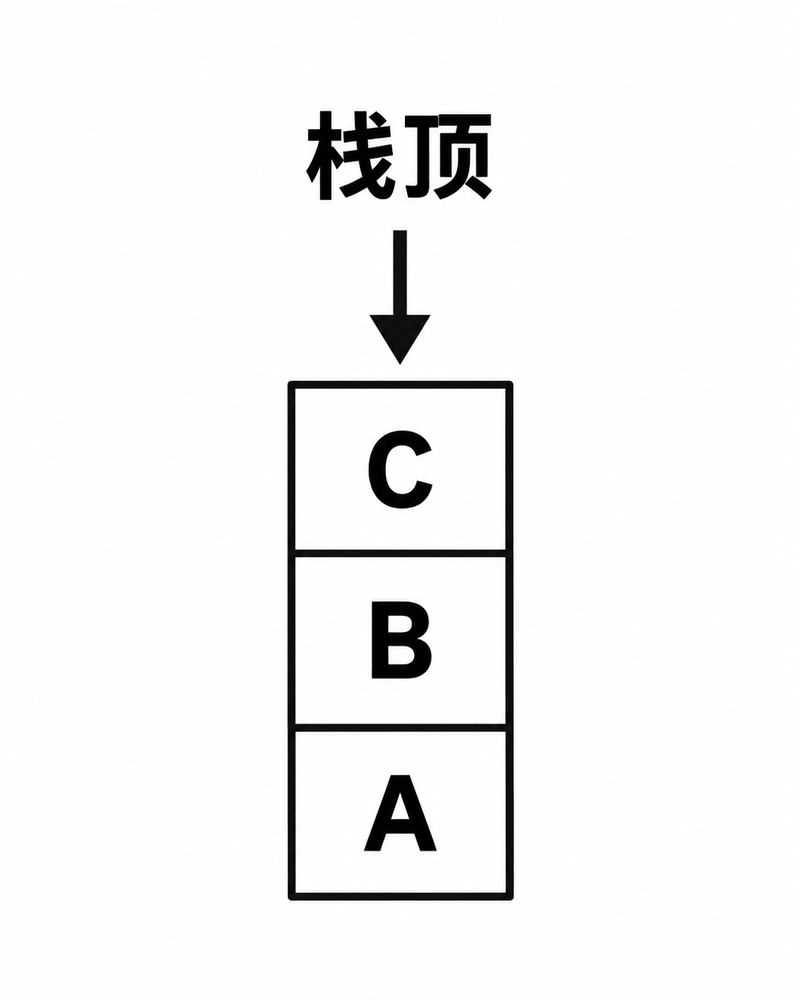
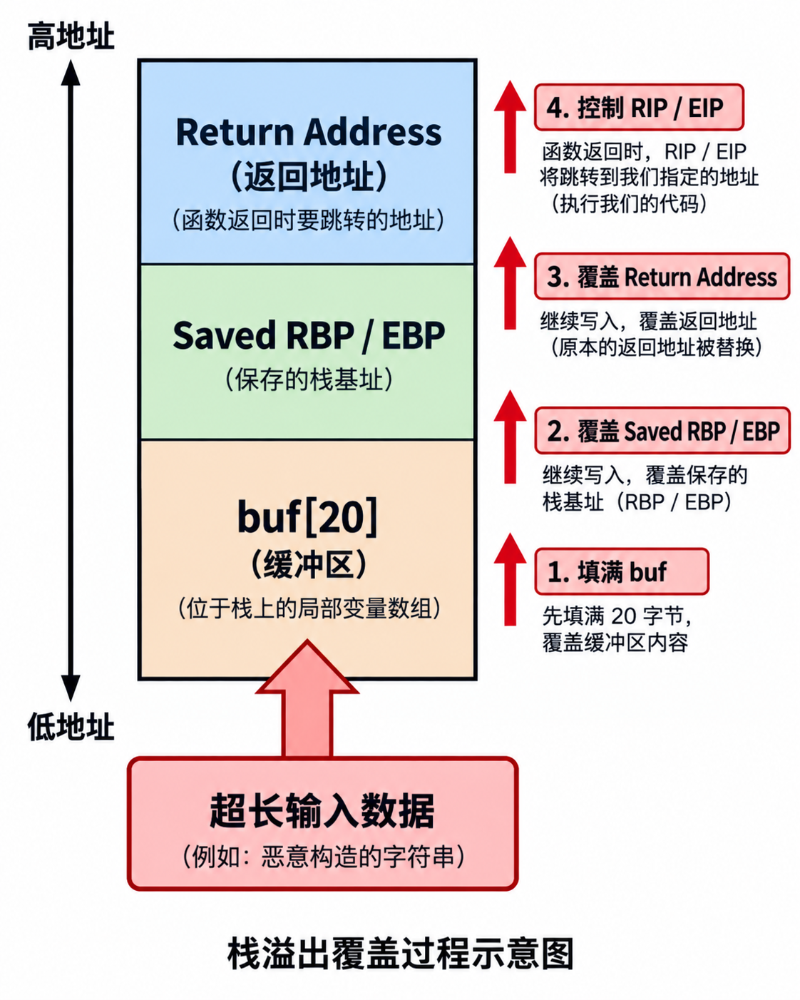
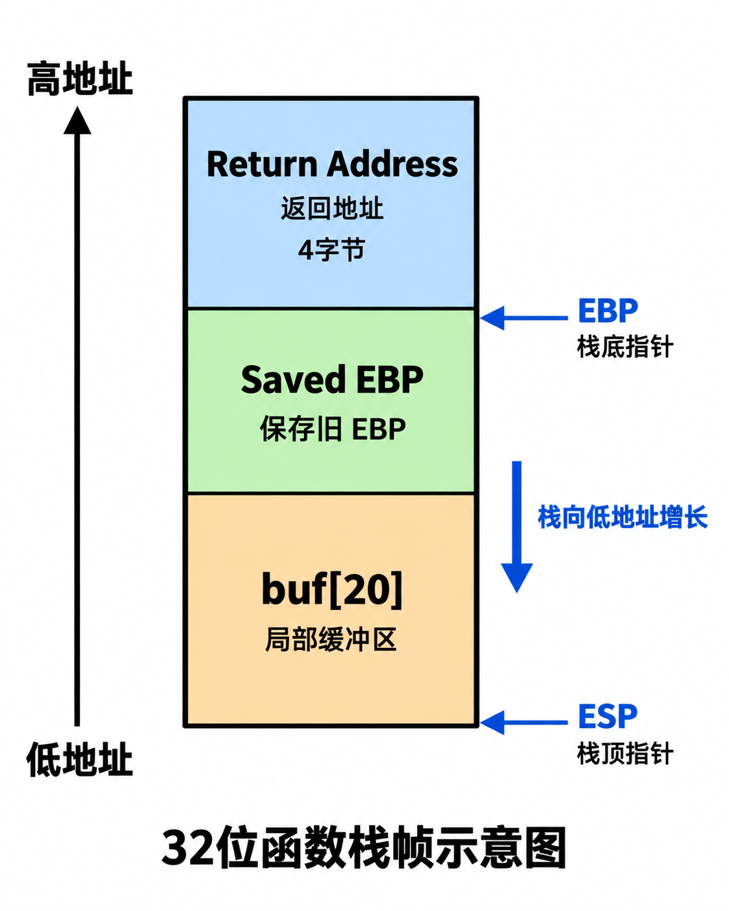
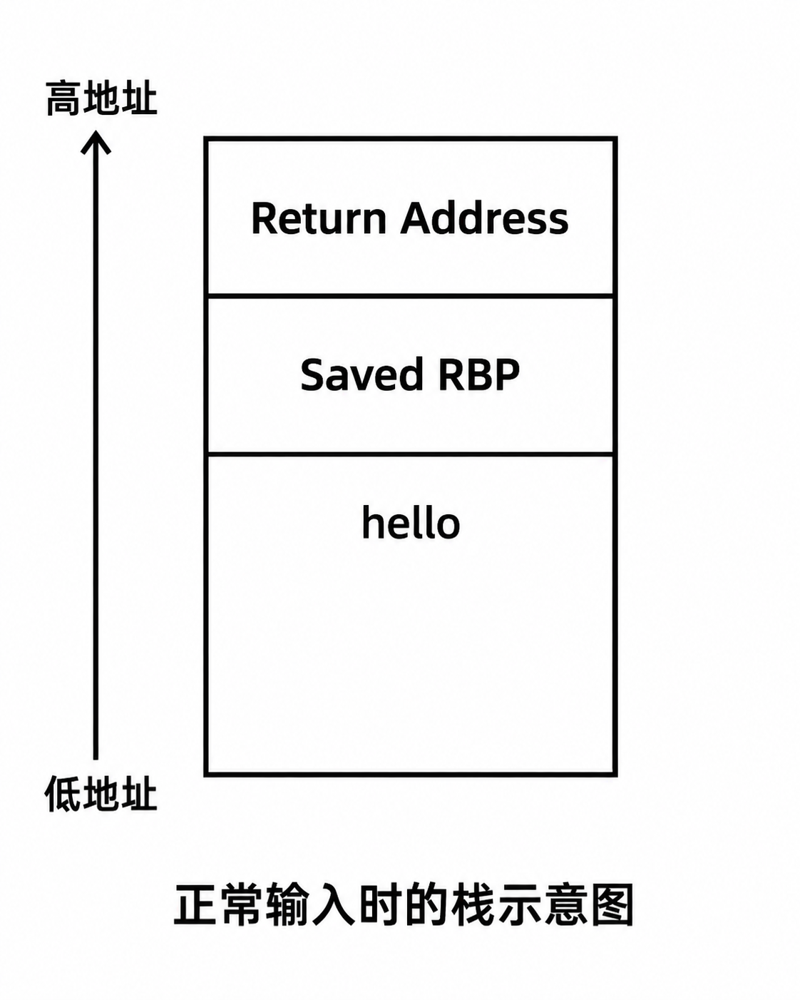
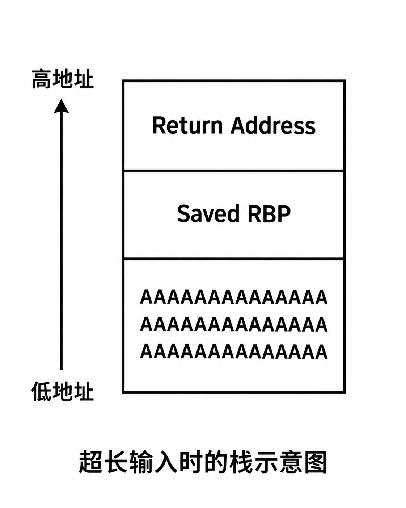
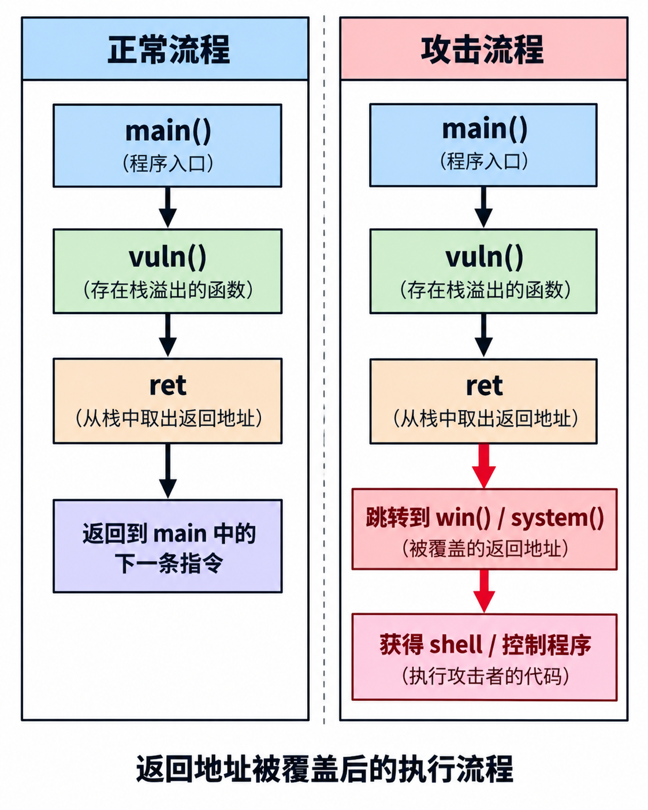
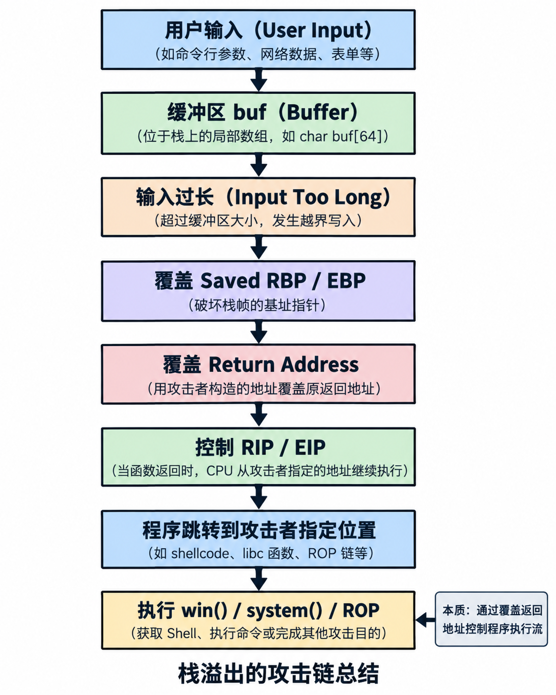

初识栈溢出：Pwn 入门基础
什么是栈？
在程序运行过程中，内存通常被划分为：
其中：
- 代码段（Text）：保存程序指令
- 数据段（Data）：保存全局变量
- 堆（Heap）：动态申请内存
- 栈（Stack）：保存函数调用信息
Pwn 中最早接触的漏洞，大部分来自：
栈上的局部变量没有限制大小，导致覆盖重要数据。
栈的特点
栈有两个重要特点：
（1）后进先出
例如：
1 | push A |
栈：

执行：
1 | pop |
取出的：
1 | C |
（2）向低地址增长
假设：
1 | 高地址 |
压入数据：
1 | push |
实际上：
1 | RSP下降 |
例如：
1 | push rax |
执行：
1 | rsp = rsp - 8 |
所以：
1 | 高地址 |
什么是函数栈帧（Stack Frame）
每调用一个函数，系统都会为它创建一个空间。
例如：
1 | void func() |
调用：
1 | main() |
进入 func：
1 | 创建 func 的栈帧 |
64位函数调用栈结构
例如：
1 | void func() |
进入函数后：

解释：
Return Address（返回地址）
最重要。
保存：
函数执行结束后应该回到哪里。
例如：
main：
1 | call func |
调用：
1 | func() |
CPU 自动保存：
1 | call 后下一条指令地址 |
保存位置：
1 | Return Address |
函数结束：
1 | ret |
执行：
1 | RIP = Return Address |
所以：
1 | 返回地址 |
Saved RBP
RBP：
栈底指针。
函数进入：
通常：
1 | push rbp |
保存旧函数的栈基址。
结构：
1 | main栈帧 |
buf
程序定义：
1 | char buf[20] |
就在这里。
32位函数栈结构
32位类似：

区别：
| 32位 | 64位 | |
|---|---|---|
| 返回地址 | 4字节 | 8字节 |
| 栈指针 | ESP | RSP |
| 栈底 | EBP | RBP |
| 控制目标 | EIP | RIP |
栈溢出的产生
看一个漏洞：
1 | void vuln() |
问题：
1 | buf |
只有：
1 | 20字节 |
但是：
1 | gets() |
不会检查输入长度。
正常输入：
例如：
1 | hello |
内存：

没有问题。
输入超过长度发生什么？
输入：
1 | AAAAAAAAAAAAAAAAAAAAAAAAAAAAAAAA |
假设：
buf：
1 | 20字节 |
但是输入：
1 | 40字节 |
数据继续写：

覆盖顺序：
1 | buf |
为什么覆盖返回地址可以控制程序？
正常：
1 | call vuln() |
流程：
1 | main |
攻击：
修改：
1 | Return Address |
例如：
原来：
1 | 0x401234 |
改成：
1 | 0x401156 |
win函数地址。
执行：
1 | ret |
CPU：
1 | RIP = 0x401156 |
于是：

栈溢出的本质
一句话：
栈溢出就是利用输入长度超过缓冲区大小，覆盖栈上的控制数据，从而控制程序执行流程。
核心链：
1 | 输入数据 |
32位和64位栈溢出区别
32位
目标：
1 | EIP |
payload：
1 | padding |
因为：
1 | return address = 4字节 |
64位
目标：
1 | RIP |
payload：
1 | padding |
但是：
1 | return address = 8字节 |
同时：
64位函数参数：
不在栈上。
例如：
1 | system("/bin/sh") |
需要：
1 | RDI="/bin/sh" |
所以需要：
1 | pop rdi |
栈溢出的攻击流程总结图

最后记忆
学习栈溢出一定记住：
1 | 函数调用 |
对于 Pwn：
- 32位：目标是 EIP
- 64位：目标是 RIP
- RSP 决定栈的位置
- RBP 帮助定位栈帧
- Return Address 是最核心的数据
下一节：
《栈溢出实战：从控制 RIP 到 ret2text（32位+64位）》
这部分会开始真正写 payload。
别再让等等耗尽你所有的可能。
不要把梦想留给未来的某一天，现在就是开始的时刻。
Don’t let someday steal all your possibilities.
Start now, keep moving, and become who you want to be.
—— yanami
相关推荐

2026-09-16
栈溢出实战 32 位 ret2text
直接实战不罗嗦了 附件 pwn32 这次实验的源码是 12345678910111213141516171819#include<stdio.h>#include<stdlib.h>void win(){ printf("You win!\n"); system("/bin/sh");}void test(){ char buf[16]; gets(buf); printf("%s\n",buf);}int main(){ test(); return 0;} 查看程序输入 1gdb pwn32 查看有哪些函数 1info functions 这里我们需要win函数的地址。 为什么我们需要win地址？可以回忆一下我们以前所学的，函数返回的时候会执行ret，而ret是什么呐，是cpu做pop eip呀，也就是从栈顶拿4个字节。我们先看看win的地址吧。输入 1disassemble win 地址...

2026-09-15
栈溢出基础 32 位
环境准备样本介绍我们的实验程序：yanami32 下载实验程序 yanami32 源码： 123456789101112#include<stdio.h>void test(){ char buf[16]; gets(buf); printf("%s\n",buf);}int main(){ test(); return 0;} 存在漏洞： 1gets(buf); gets 不限制输入长度。例如 1AAAA 只影响 buf 12buf:AAAA 但是 1AAAAAAAAAAAAAAAAAAAAAAAAAAAAAAAA 可能覆盖 123bufsaved ebpreturn address 进入 gdb 调试命令： 1gdb ./yanami32 进入调试环境。 常用指令介绍这里统一解释一次。 1. disassemble1disassemble test 作用：查看函数反汇编。例如： 2. break简写： 1b 作用：设置断点。例如 1b test 表示：程序运行到 test...

2026-09-14
WSL2+vscode配置基础pwn环境
检查虚拟化WSL2 需要 CPU 虚拟化打开任务管理器，查看性能看看右下角是否为虚拟化 这里如果是已禁用我建议进入BIOS开：AMD:SVM Mode 开启Windows功能管理员打开powershell执行 1dism.exe /online /enable-feature /featurename:Microsoft-Windows-Subsystem-Linux /all /norestart 然后输入 1dism.exe /online /enable-feature /featurename:VirtualMachinePlatform /all /norestart 重启一下电脑 安装 WSL2这里我们来安装ubuntu22.04首先我们先更新一下wsl 1wsl --update 重启一下wsl 1wsl --shutdown 查看可用的版本 1wsl --list --online 这里我们安装ubuntu-22.04命令如下 1wsl --install -d Ubuntu-22.04 看powershell这里会出现Create a default Un...

2026-09-14
初识寄存器
x86 / x86-64 寄存器详解（Pwn 入门基础）在学习 Pwn 时，寄存器是必须掌握的基础知识。程序运行过程中，CPU 通过寄存器保存： 数据 地址 函数参数 返回值 当前执行位置 栈信息理解寄存器，实际上就是理解程序如何运行、函数如何调用以及漏洞利用如何控制程序流程。x86 架构主要分为： 32 位（x86） 64 位（x86-64 / amd64）二者最大的区别： 32 位寄存器宽度为 32 bit 64 位寄存器宽度为 64 bit例如： 1234532位:EAX64位:RAX 64 位寄存器通常是在原来的 32 位寄存器前面加 R。 通用寄存器x86 提供多个通用寄存器，用于存储临时数据、地址以及计算结果。 32 位寄存器 寄存器 名称 作用 EAX Accumulator 累加器 EBX Base Register 基址寄存器 ECX Counter 计数器 EDX Data Register 数据寄存器 ESI Source Index 源地址索引 EDI Destination Index 目标地址索引 ...